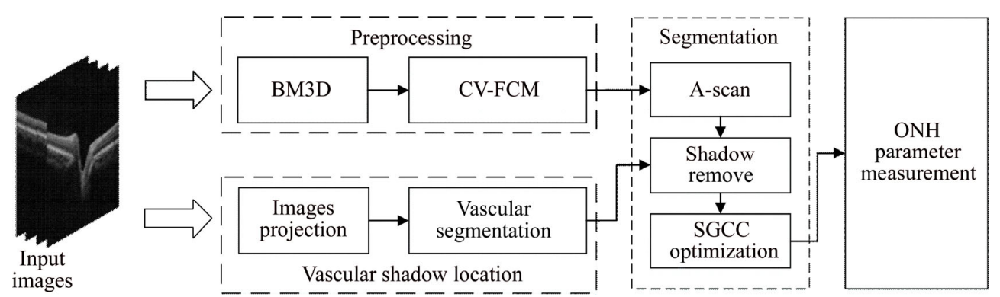

Hao WeiPh.D. Candidate
Rm 502, Mong Man Wai Building |
|


Biography
Now, I am an PhD candidate (22Fall) at the Dept. Biomedical Engineering, The Chinese University of Hong Kong supervised by Prof. Scott Yuan at ABILab. Previously, I received my MS and BS from Central South University in 2020 and 2017, respectively, both with a major of computer science and technology.
My research interests include medical image analysis, semi-supervised learning and domain generalization.
Selected Publications [Google Scholar]
| Dual-consistency semi-supervision combined with self-supervision for vessel segmentation in retinal OCTA images. Zailiang Chen, Yuchen Xiong, Hao Wei, Rongchang Zhao, Xuanchu Duan, Hailan Shen. Biomedical Optics Express (BOE), 2022. [paper][code] |
|
| AneNet: A lightweight network for the real-time anemia screening from retinal vessel optical coherence tomography images. Hao Wei, Hailan Shen, Junhua Li, Rongchang Zhao, Zailiang Chen. Optics & Laser Technology, 2021. |
|
| The delineation of largely deformed brain midline using regression‐based line detection network. Hao Wei, Xiangyu Tang, Minqing Zhang, Qingfeng Li, et.al. Medical Physics, 2020. [paper] |
|
| The segmentation of retinal layer and fluid in SD-OCT images using mutex dice loss based fully convolutional networks. Hao Wei, Peng Peng. IEEE Access, 2020. [paper] |
|
| Automated segmentation of fluid regions in optical coherence tomography B-scan images of age-related macular degeneration. Zailiang Chen, Dabao Li, Hailan Shen, Hailan Mo, Ziyang Zeng, Hao Wei. Optics & Laser Technology, 2020. [paper] |
|

|
Regression-based line detection network for delineation of largely deformed brain midline. Hao Wei, Xiangyu Tang, Minqing Zhang, Qingfeng Li, et.al. International Conference on Medical Image Computing and Computer-Assisted Intervention (MICCAI), 2019. [paper] |
| Novel iterative attention focusing strategy for joint pathology localization and prediction of MCI progression. Qingfeng Li, Xiaodan Xing, Ying Sun, Bin Xiao, Hao Wei, et.al. International Conference on Medical Image Computing and Computer-Assisted Intervention (MICCAI), 2019. [paper] |
|
| Region-segmentation strategy for Bruch’s membrane opening detection in spectral domain optical coherence tomography images. Zailiang Chen, Peng Peng, Hailan Shen, Hao Wei, et.al. Biomedical optics express (BOE), 2019. [paper] |
|
|  | Intraretinal layer segmentation and parameter measurement in optic nerve head region through energy function of spatial-gradient continuity constraint. Zai-liang Chen, Hao Wei, Hai-lan Shen, Peng Peng, et.al. Journal of Central South University, 2018. [paper] |
Patents
-
Image center line detection method, computer equipment and storage medium.
Hao Wei, Feng Shi and Xiang Zhou.
China. CN110472670A. 2019-11-19
-
Medical image anatomy center line determination method, computer equipment and storage medium.
Hao Wei, Feng Shi and Xiang Zhou.
China. CN110473172A. 2019-11-19
-
Region-of-interest extraction method and device, equipment and storage medium.
Hao Wei, Feng Shi and Yiqiang Zhan.
China. CN109741346A. 2019-05-10
Honors & Awards
| Outstanding Graduate, 2017 |
| Excellent Student, 2014, 2015, 2016 |
Experience
The Chinese University of Hong Kong (Shenzhen)
Advisor: Zhen Li
Shanghai United Imaging Intelligence Co., Ltd.

© Hao Wei | Last updated: August 2022